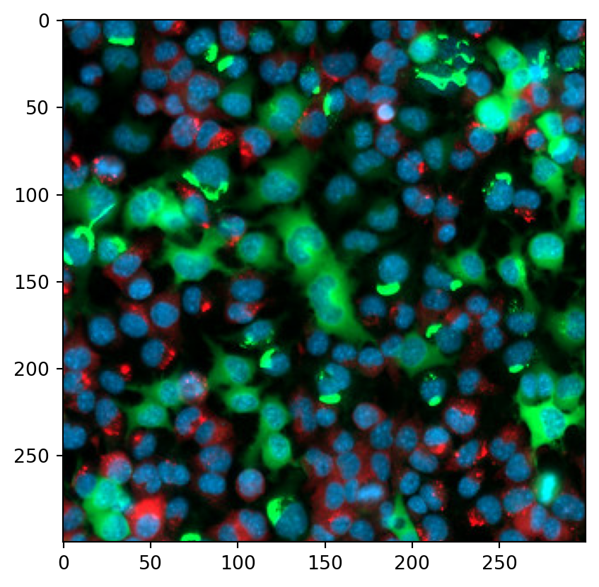

import numpy as np
import pandas as pd
import matplotlib.pyplot as plt
images_file = '/home/keke/data/web/python_for_microscopists/images/test_image.jpg'
images_file_czi = '/home/keke/data/web/python_for_microscopists/images/test_image.czi'
images_file_ome_tiff = '/home/keke/data/web/python_for_microscopists/images/test_image.ome.tif'Python for microscopist
Aims
processing HE
processing immune staining
Images
images in python
IO
PIL
matplotlib
skimage
openCV
- basic usages
# 2) read by matplotlib
import matplotlib.image as mping
img = mping.imread(images_file)
print(type(img))
plt.imshow(img)
plt.colorbar()<class 'numpy.ndarray'><matplotlib.colorbar.Colorbar at 0x7fee16d37450>
# 3) read by skimage
from skimage import io, img_as_float, img_as_ubyte
img = io.imread(images_file)
print(type(img))
# conver imgae as float
img_float = img_as_float(img)
print(img_float)
plt.imshow(img)
plt.colorbar()
plt.show()
plt.imshow(img_float)
plt.colorbar()
plt.show()<class 'numpy.ndarray'>
[[[0.04705882 0.21176471 0.36078431]
[0. 0.36470588 0.49411765]
[0. 0.45882353 0.60392157]
...
[0. 0. 0. ]
[0. 0. 0. ]
[0. 0. 0. ]]
[[0.06666667 0.23137255 0.3254902 ]
[0.02745098 0.34901961 0.44313725]
[0. 0.4 0.5372549 ]
...
[0. 0. 0. ]
[0. 0. 0. ]
[0. 0. 0. ]]
[[0.09019608 0.16078431 0.20784314]
[0.05490196 0.2627451 0.3254902 ]
[0.01568627 0.30980392 0.42352941]
...
[0. 0. 0. ]
[0. 0. 0. ]
[0. 0. 0. ]]
...
[[0. 0.10196078 0.01176471]
[0. 0.09019608 0.00784314]
[0. 0.08235294 0.01176471]
...
[0.03137255 0.07843137 0.13333333]
[0.01176471 0.03137255 0.05490196]
[0.00392157 0.01176471 0.00784314]]
[[0. 0.17647059 0.03137255]
[0. 0.15294118 0.02745098]
[0. 0.12941176 0.03529412]
...
[0.0745098 0.14117647 0.21176471]
[0.04705882 0.07058824 0.11764706]
[0.02745098 0.02352941 0.04313725]]
[[0.00784314 0.25882353 0.05490196]
[0.00392157 0.21176471 0.04705882]
[0. 0.14509804 0.02352941]
...
[0.05098039 0.19215686 0.27843137]
[0.16078431 0.09019608 0.17647059]
[0.07843137 0.02745098 0.05490196]]]
- reading multiple images / time-series files
- czifile
- apeer-ometiff-library
- read all files
using glob
preprocessing
PIL
resize: change the ratio
thumbnail: orgin ratio
crop
paste:
rotate
from PIL import Image
img = Image.open(images_file)
print(img.format)
print(img.mode)
print(img.size)
print(type(img))
# resize
plt.imshow(img)
plt.show()
small_img = img.resize((200,300))
plt.imshow(small_img)
plt.show()
# thumbnail
img.thumbnail((200,300))
print(img.size)
plt.imshow(img)
plt.show()
img.thumbnail((1200,1300))
print(img.size)
plt.imshow(img)
plt.show()
# crop
img = Image.open(images_file)
crop_img = img.crop((0,0,300,300))
plt.imshow(crop_img)
plt.show()
# paste
img.paste(crop_img)
# image
img.rotate(90)JPEG
RGB
(639, 513)
<class 'PIL.JpegImagePlugin.JpegImageFile'>(200, 161)
(200, 161)
skimage
from skimage import io
from matplotlib import pyplot as plt
from skimage.transform import rescale,resize,downscale_local_mean
img = io.imread(images_file,as_gray=True)
plt.imshow(img)
plt.show()
# rescale
img_rescale = rescale(img,1/4,anti_aliasing=True)
plt.imshow(img_rescale)
plt.show()
img_resize =resize(img,(200,200),anti_aliasing=True)
plt.imshow(img_resize)
plt.show()
img_down = downscale_local_mean(img,(4,3))
plt.imshow(img_down)
plt.show()- edge detections
from skimage.filters import roberts,sobel,scharr,prewitt
from skimage.feature import canny
edge_canny = canny(img,sigma = 5)
plt.imshow(edge_canny)
plt.show()- deconvolution
psf: point spread function
from skimage import restoration
import numpy as np
psf = np.ones((3,3)) / 9
decon,_ = restoration.unsupervised_wiener(img,psf)
plt.imshow(decon,cmap="gray")
plt.show()- example: wound healing
Introduce entropy there, in wound healing experiments, the clean images and the
from skimage import io,restoration
from skimage.filters.rank import entropy
from skimage.morphology import disk
images_file = '/home/keke/data/web/python_for_microscopists/images/scratch.jpg'
img = io.imread(images_file)
entr_img = entropy(img,disk(3))
plt.imshow(entr_img,cmap = "gray")
plt.show()
# try all
from skimage.filters import try_all_threshold
from skimage.filters import threshold_otsu
fig,ax = try_all_threshold(entr_img,figsize = (10,8),verbose =False)
plt.show()
# thereshold is one single number
ts_value = threshold_otsu(entr_img)
print(ts_value)
# sum the value to get percentages
np.sum(entr_img < ts_value)/(np.sum(entr_img < ts_value) + np.sum(entr_img > ts_value))2.1348549294994210.2891522491349481reference
Almost all the content comes from: https://www.youtube.com/watch?v=X_pCiVQ4c4E&list=PLZsOBAyNTZwbIjGnolFydAN33gyyGP7lT